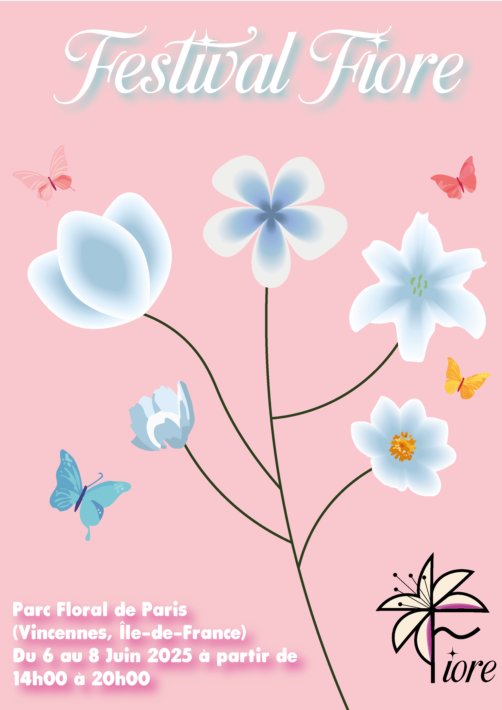

Fiore est un projet universitaire fictif de création de festival que j’ai réalisé entièrement seul. J’ai imaginé le concept du festival, son positionnement, et conçu toute son identité visuelle. J’ai réalisé une affiche, un magazine ainsi qu’un univers graphique complet. Ce projet m’a permis de mettre en pratique mes compétences en direction artistique, en design graphique et en mise en page, tout en développant une identité cohérente autour d’un événement culturel.
Pour ce projet j'ai utilisés de nombreux outils tels que Photoshop, Illustrator, Canva, InDesign et bien d'autres.
Voici la finalité du projet, vous y retrouverez l’ensemble des éléments que j'ai réalisé tout au long de sa conception :
